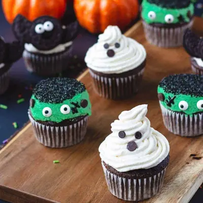

Vegan Halloween Cupcakes

Ingredients
- 1 cup non-dairy milk
- 1 tsp apple cider vinegar
- 1 cup all purpose flour
- 1/3 cup cocoa powder
- 1 tsp baking soda
- 1/2 tsp baking powder
- 1/4 tsp salt
- 3/4 cup cane sugar
- 1/2 cup vegetable oil
- 1 tsp vanilla extract
- 1 cup vegan butter (Earth Balance or similar brand)
- 3 cups powdered sugar
- 2 tbsp non-dairy milk
- 1 tsp vanilla extract
- black decorating gel
- green food coloring
- 8 candy eyes
- 8 dairy free chocolate chips
- 8 mini dairy free chocolate chips
- 4 dairy free chocolate chips
- 4 Oreo cookies (or similar brand)
- 8 candy eyes
- black decorating gel
Steps
- Preheat oven to 350° F. Combine the non-dairy milk and apple cider vinegar in a bowl. Whisk together and set aside for 10 minutes. This creates vegan buttermilk.
- Combine the all-purpose flour, cacao powder, baking soda, baking powder, and salt in a medium bowl. Whisk together to combine.
- Combine the vegetable oil, sugar, and vanilla extract in a large bowl. Whisk together to combine. Add the vegan buttermilk. Whisk together until completely combined.
- Pour the dry ingredients into the bowl with the wet ingredients. Stir until combined. Don't overmix.
- Line the muffin tin with cupcake liners. Fill the liners 3/4 of the way full. Bake for 18-20 minutes or until a toothpick inserted comes out clean. Allow the cupcakes to cool in the tin for 10 minutes, then transfer them to a wire rack to cool completely.
- Bring the vegan butter to room temperature. Do not melt the butter. It must be at room temperature.
- Whip the butter with a mixer at medium speed until creamy.
- Add the powdered sugar 1/2 a cup at a time until it is absorbed before adding the next cup until all of the sugar has been added.
- Add the non-dairy milk one tablespoon at a time, whipping as you go. Add the vanilla extract. and continue to whip until the buttercream is light and fluffy.
- Transfer 1/3 of the frosting to another bowl. Add the green food coloring and stir until the desired color is achieved.
- Top the cupcakes with the green frosting. Smooth the top with a knife so that the frosting is flat on the top. Add black sugar sprinkles to a shallow bowl. Dip the top of the cupcakes in the black sprinkles.
- Add two candy eyes to the front and two chocolate chips, flat side out, to the sides. With the black gel pen, draw a line with two lines crossing over to create a scar.
- Transfer 1/3 of the vanilla buttercream frosting to a piping bag. Pipe the frosting into a swirl. Add two mini chocolate chips to the center for the eyes and one regular chocolate chip to the center for the mouth.
- Twist to separate the Oreo cookies from the cream center. Usually, the cream will stick more to one side. Scrape any extra cream off the side of the cookie with the least amount of cream. Break that cookie in half. Press the two halves to the back of the cookie with the cream.
- With the black food gel make two dots for the eyes. Press the candy eyes on the black food gel. This will help them stick.
- Draw a smile under the eyes with the black food gel pen.
- Frost the cupcake with vanilla frosting so that it's about 3/4 of an inch high. Gently place Oreo bat at the center. The frosting will hold the bat in place.
- Using the cream center from the Oreo, roll into small balls. Press mini chocolate chip into the center.
Recipe by Anjali Shah · The Picky Eater, from The Picky Eater. Saved here for personal use; the original has the full notes, tips and photos. Open original